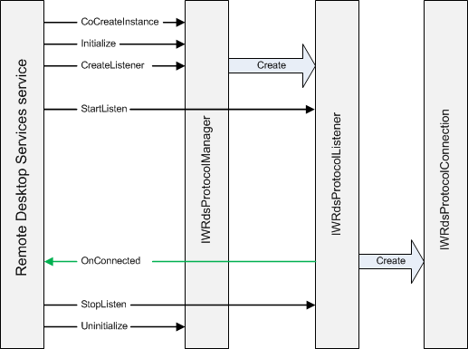

title: Start Sequence
description: Steps to starting your custom protocol.
ms.assetid: 34c6eb08-668b-43b7-b49b-9ab7536ab658
ms.tgt_platform: multiple
ms.topic: article
ms.date: 05/31/2018
Start Sequence
To start your protocol provider, the Remote Desktop Services service:
- Retrieves the name of the listener and the CLSID of your protocol manager object (IWRdsProtocolManager) from the registry. For more information, see Registering the Protocol Manager.
- Calls Initialize to initialize the protocol manager.
- Creates a protocol manager object using the CLSID. Even if there are multiple listeners registered for the same protocol provider, the service only creates one protocol manager object.
- Calls CreateListener to instruct the protocol manager object to create an IWRdsProtocolListener listener object and return it to the service. The protocol manager object must add a reference to the listener object before returning it to the service. The service will release the object when the service stops or the listener is deleted.
- Calls StartListen on the listener object so that the listener can start listening for incoming connections.
- Calls StopListen to stop the listener object from listening.
- Calls Uninitialize to uninitialize the protocol manager.
The listener creates an IWRdsProtocolConnection object when a client tries to connect. The listener object calls OnConnected to notify the Remote Desktop Services service that a new client is trying to connect or reconnect, and passes the IWRdsProtocolConnection object in that call. The Remote Desktop Services service will in turn return an IWRdsProtocolConnectionCallback object in that call so that the protocol can communicate with the Remote Desktop Services service as needed. The service adds a reference to the callback object before returning, and the protocol must release that reference when the connection closes.
The following illustration shows the interaction between the various objects during startup.

Related topics
Method Call Sequence
Connection Sequence
Â
Â